Chain Data
Transformations
Replacing fragmented, script-heavy processes with a scalable chained transformation system, reducing operational friction, improving workflow efficiency, and also creating a more streamlined experience for Managed Services teams.
Overview
About Reputation
Reputation is a SaaS platform that helps businesses manage customer experience and online reputation by centralizing reviews, surveys, sentiment analysis, social engagement, and operational workflows.
About Rep Connect
A major part of the platform relied on integrations through Rep Connect, where businesses connected external systems to automate workflows like Review Requests, Survey Requests, Survey Imports/Exports, User Imports, Create Locations/Listings, and Create Users. For this project I was tasked to enhance data transformation capabilities within the mapping step of all of our workflows. What initially appeared to be a small enhancement request to the mapping step ultimately uncovered broader workflow inefficiencies and UX architecture issues throughout the transformation experience.
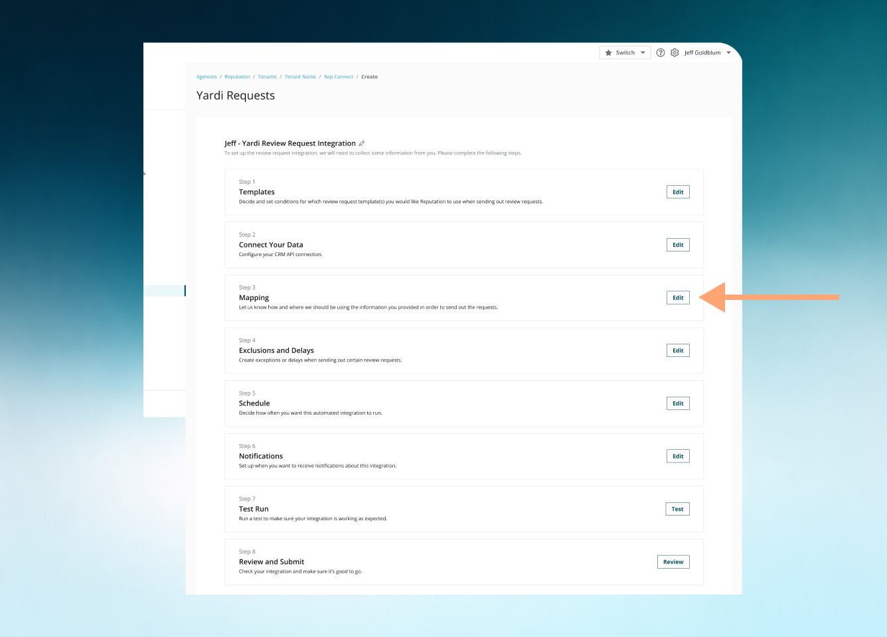
Users
This initiative initially focused on Managed Services users. Managed Services teams were responsible for onboarding enterprise customers, configuring integrations, transforming customer data, mapping fields, transforming data, troubleshooting mapping logic, and maintaining operational workflows across external systems. Because integrations varied significantly between customers, users frequently relied on complex formatting, lookup, splitting, concatenation, and conditional mapping workflows. Although the project was focused on Managed Services, we wanted the experience to be as simple and self-serve as possible. A subset of customers managed their own integrations, so it was important to design a solution that could scale and remain accessible to less technical / power users.
Problems
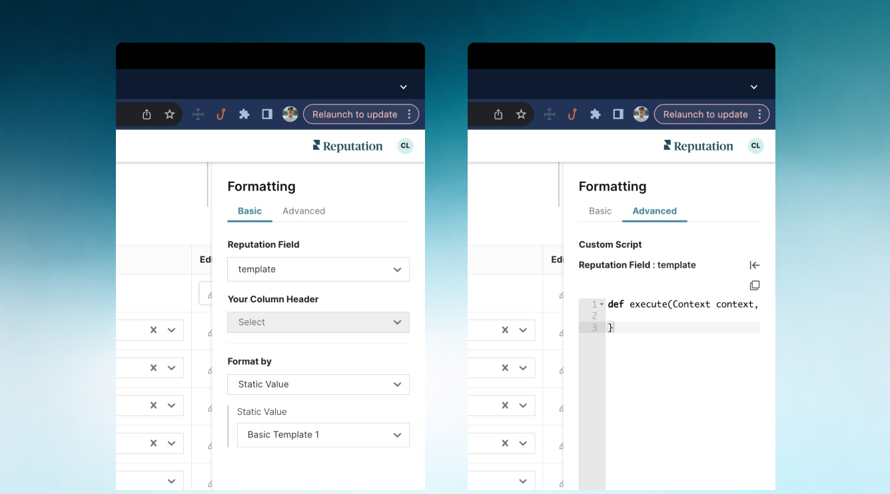
Limited Data Transformation Flexibility
A major workflow limitation (and the main customer request for this project) was that users could only apply a single transformation at a time, forcing even common multi-step formatting workflows to rely on scripts, engineering support, or operational workarounds. Tasks like concatenating names before title casing, chaining splits with lookups, or applying formatting after dynamic mappings were technically possible, but not scalable or self-service friendly within the existing product experience.
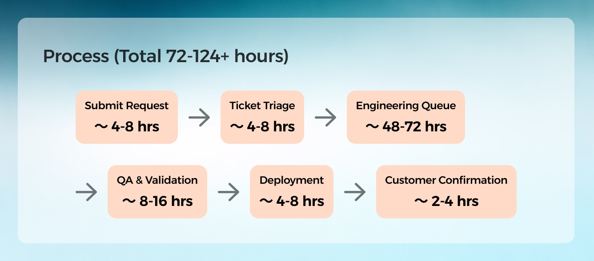
Long Turnaround Times from Engineering
Nearly every transformation required Engineering involvement, creating a bottleneck that slowed delivery from hours to several days. These requests would often fight with teams priorities as well.
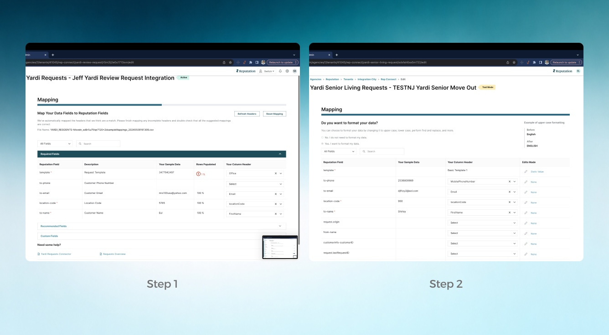
Fragmented Mapping and Transformation Workflows
Additionally I found, that the existing workflow separated field mapping and data transformations into different steps, forcing users to repeatedly switch contexts to apply formatting or transformation logic, creating unnecessary navigation, repetitive configuration behavior, increased cognitive load, and a disconnected/longer overall workflow experience.
Poor Visibility Into Data Transformation Logic
The workflow lacked previews and clear visibility into transformation outcomes, making it difficult for users to understand execution order, predict final output values, or evaluate how chained logic impacted results, ultimately increasing configuration errors and slowing down validation workflows.
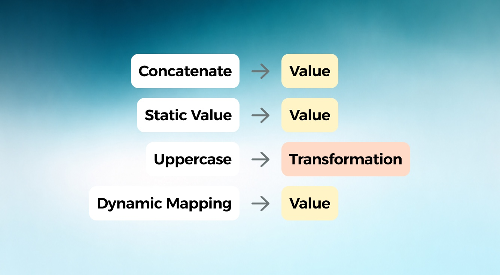
Confusing Terminology
Another major issue was that non-transformation actions were incorrectly grouped under the same “transformation” layer, tightly coupling mapping, formatting, and logic behaviors into a single workflow that was harder to understand, maintain, and scale, while also blurring the distinction between how data is mapped, formatted, and transformed.
Research Insights
I worked closely with the Managed Services team during the design process, including multiple collaborative sessions with Gavin, to better understand their workflows.
Key Learnings
→ Users think in transformation flows, not single steps — common workflows consistently required chaining multiple operations together rather than isolated actions.
→ There were some common use transformation combinations used like concatenation, splitting, lookups, and formatting followed by predictable sequences across different values.
→ Workarounds and scripting were masking product gaps — many “standard” needs were being solved through manual scripts or operational effort, revealing a scalability and self-service limitation in the existing experience. This re-validated the request.
→ The terminology of value vs transformation was validated and that the 2 steps within mapping were unnecessary.
→ While users could copy and reuse existing Engineering-created scripts, most still felt intimidated by scripting and were hesitant to make even small changes for fear of breaking them. As a result, Engineering intervention was almost always required.
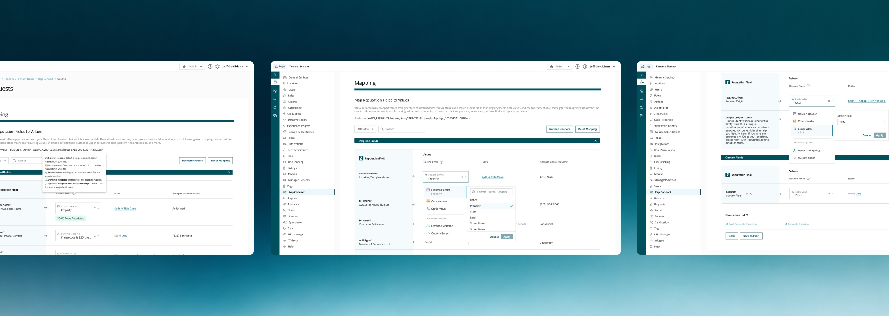
Solutions
Though originally this was more of a medium size feature request, I approached the initiative also as a broader workflow redesign centered around scalability, usability, and operational efficiency. The team bought into the solutions.
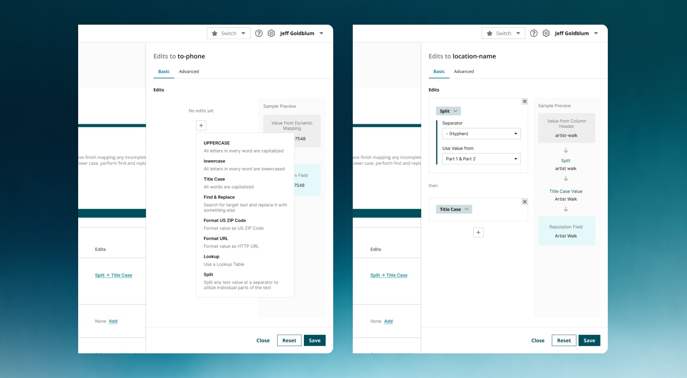
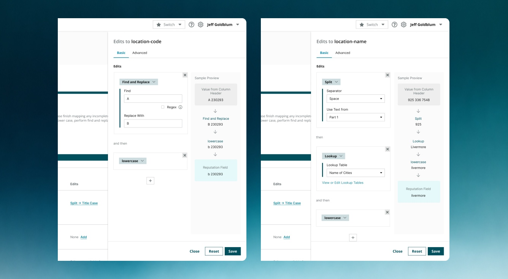
Solving for Limited Transformation Flexibility by Expanding Capabilities (Main Request)
A key limitation was the inability to apply multiple transformation rules to a single field without scripts, so I introduced chained transformation logic within the product, allowing users to stack ordered rules like concatenation, splitting, lookups, and formatting, significantly reducing engineering dependency and enabling more self-serve configuration for Managed Services workflows.
Significantly Quicker and More Self Serve
With the new capabilities users were able to skip engineering intervention and cut down time to complete a new chained data transformation to 2-5 minutes.
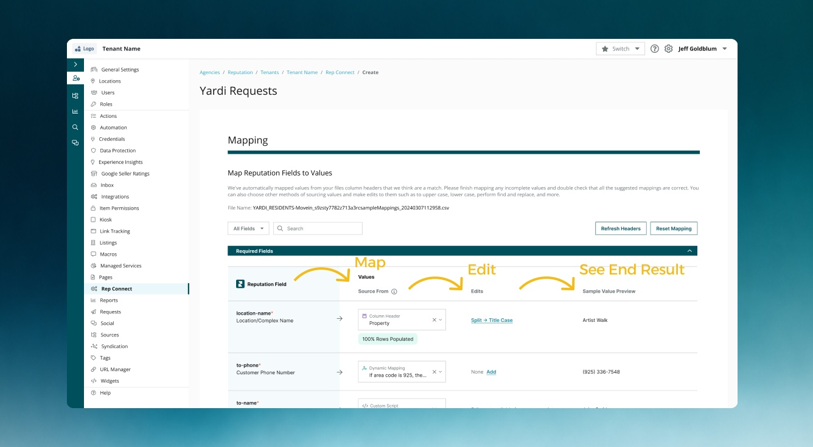
Solving Fragmented Workflows by Reducing Steps, Separating Values and Showing End Results
Previously, field mapping and transformations were split into separate steps, forcing context switching and repetitive setup, so I unified them into a single workflow where users could map fields to values and apply transformations in one place, aligning the experience with how users naturally thinks about fields as a continuous configuration flow. As transformation flexibility increased, I redesigned the table structure and layout to improve readability and clarity, making each ordered transformation step visually traceable to its output, while a redesigned side panel enabled more structured building, editing, and validation of complex transformation chains.
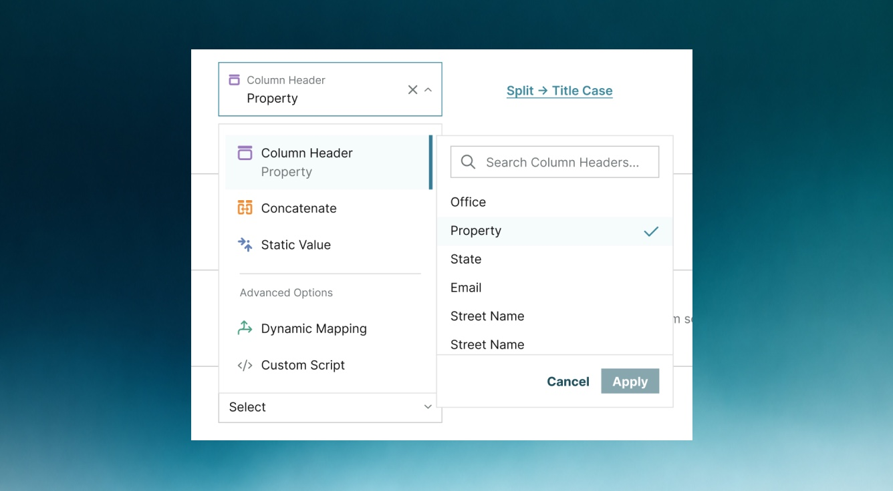
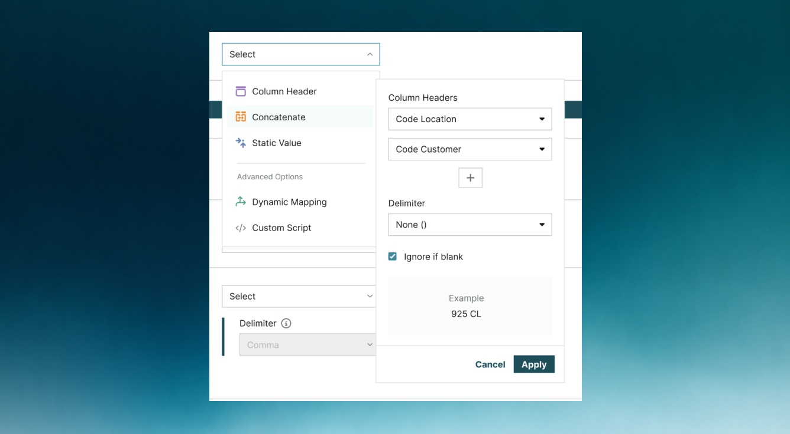
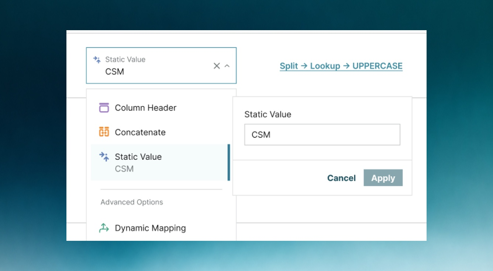
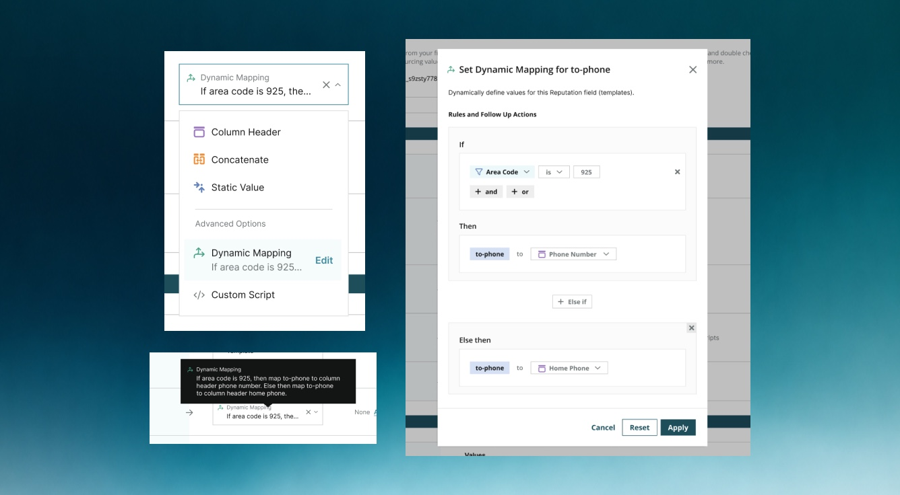
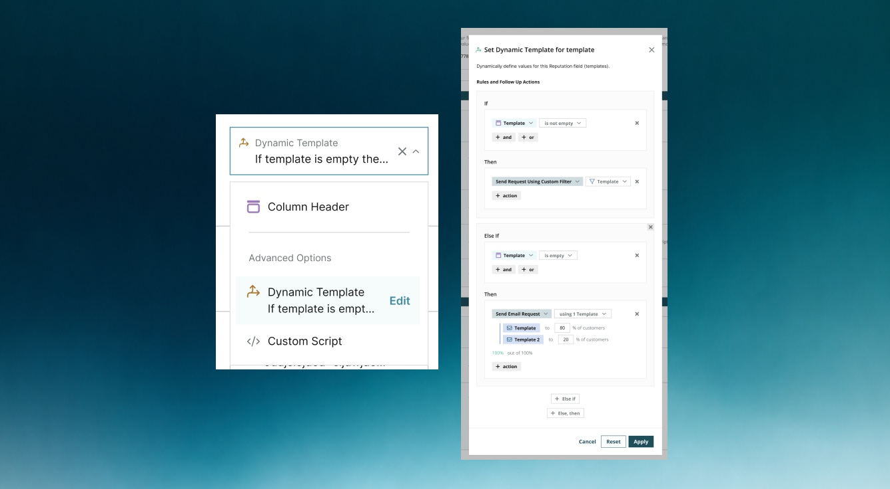
Enhancing Interaction Patterns for Value Selection and Configuration
Increasing Transparency in Transformation Execution
Retrospective
average time cut to complete a new chained transformation task
This project reinforced that small feature requests can often peel a off a lot more layers to the onion. It can surface deeper systemic workflow and scalability issues across the product. What began as a request for chained formatting rules ultimately revealed fragmented workflows, unclear architecture, and usability gaps in the broader integration experience.
It deepened my focus on designing for user mental models and transformation outcomes rather than system constraints, showing how thoughtful UX can reduce operational complexity while preserving flexibility and extensibility across all integrations. At the end, managed services team liked the update!